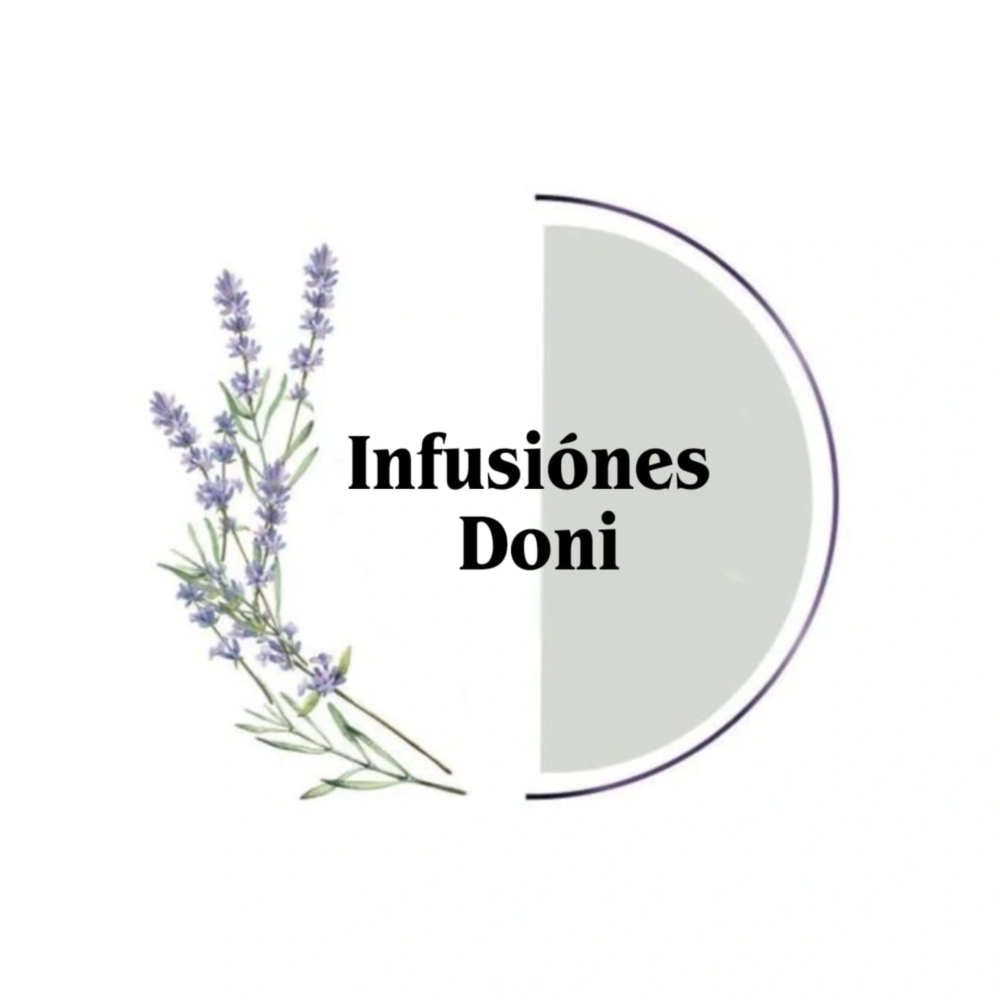
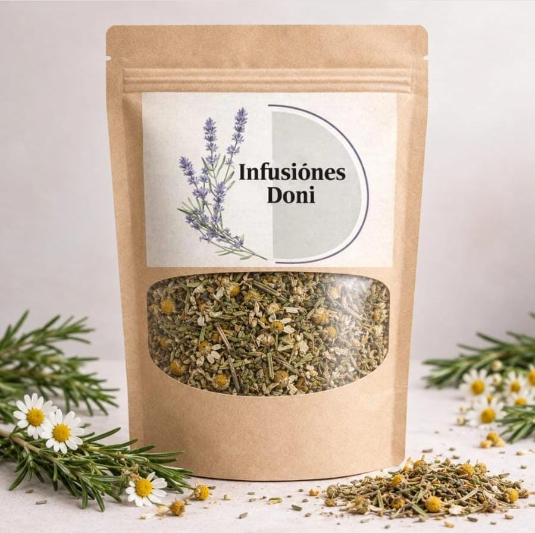
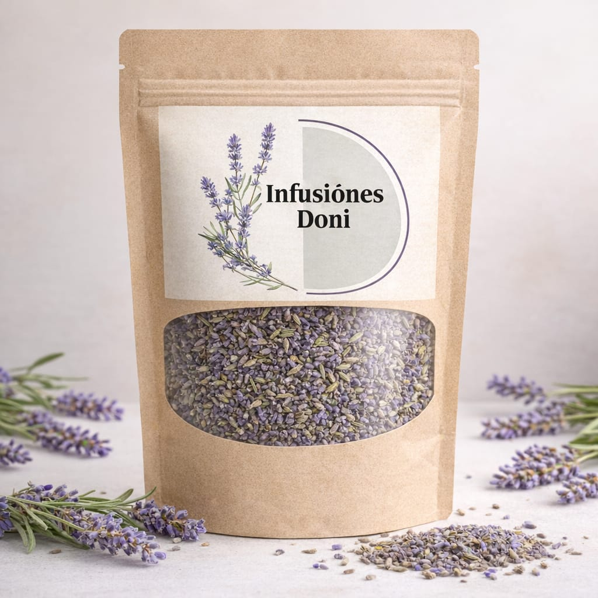

Crear infusiones naturales de calidad que promuevan el bienestar físico y emocional, ofreciendo experiencias aromáticas y accesibles.
Consolidarnos como una marca líder de infusiones a nivel nacional, reconocida por su compromiso con la salud y la sostenibilidad.
Somos Infusiones Doni, un emprendimiento universitario dedicado a la elaboración y comercialización de infusiones naturales, creado con el propósito de ofrecer una alternativa que contribuya al bienestar y a combatir el estrés de las personas mediante una bebida reconfortante y agradable.
Brindar tranquilidad en cada taza, porque creemos que todos merecen un momento de paz.

•Empaque de papel kraft ecológico con 35 gr de contenido.
•Ingredientes: Manzanilla y Romero.
•Características físicas; Mezcla de flores secas con arbusto creando un aroma suave herbal y floral.
•Sabor: Sabor suave semi amargo por el Romero con un toque dulce de la manzanilla creando una combinación balanceada entre ambos sabores.
•Duracion del producto: De 6 a 12 meses en un lugar fresco y seco.
$65

•Empaque de papel kraft ecológico con 30 gr de contenido.
•Ingredientes: Lavanda.
•Características físicas; Flores secas con aroma herbal y floral.
•Sabor: Sabor suave con un toque dulce.
•Duracion del producto: De 6 a 12 meses en un lugar fresco y seco.
$65